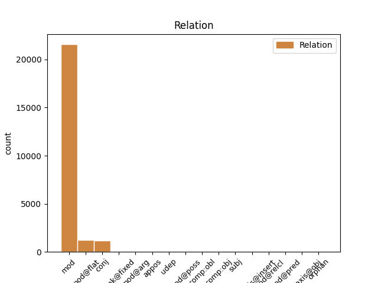
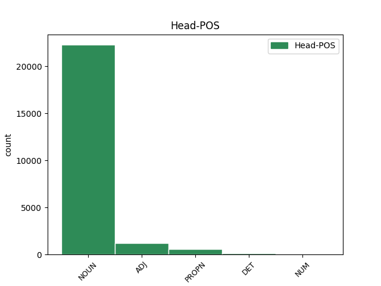
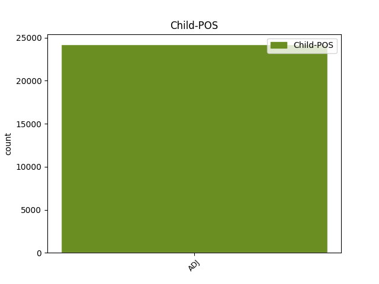

Distribution of features within this leaf



Agreement Rules sorted by frequency.
- When the dependent token is the modifer(mod) of the head token, and the head token is NOUN and the dependent token is ADJ.
1 W _ _ _ _ 0 _ _ _
2 przeciwieństwie _ _ _ _ 0 _ _ _
3 do _ _ _ _ 0 _ _ _
4 pozostałej pozostały ADJ adj:sg:gen:f:pos Case=Gen|Degree=Pos|Gender=Fem|Number=Sing 5 mod _ _
5 trójki trójka NOUN subst:sg:gen:f Case=Gen|Gender=Fem|Number=Sing 0 _ _ _
6 zachowywał _ _ _ _ 0 _ _ _
7 się _ _ _ _ 0 _ _ _
8 tak _ _ _ _ 0 _ _ _
9 , _ _ _ _ 0 _ _ _
10 jakby _ _ _ _ 0 _ _ _
11 przygoda _ _ _ _ 0 _ _ _
12 go _ _ _ _ 0 _ _ _
13 cieszyła _ _ _ _ 0 _ _ _
14 . _ _ _ _ 0 _ _ _
1 Prawdopodobnie _ _ _ _ 0 _ _ _
2 najpoważniej _ _ _ _ 0 _ _ _
3 ucierpi _ _ _ _ 0 _ _ _
4 sektor _ _ _ _ 0 _ _ _
5 przemysłowy przemysłowy ADJ adj:sg:nom:m3:pos Animacy=Inan|Case=Nom|Degree=Pos|Gender=Masc|Number=Sing 0 _ _ _
6 i _ _ _ _ 0 _ _ _
7 finansowy finansowy ADJ adj:sg:nom:m3:pos Animacy=Inan|Case=Nom|Degree=Pos|Gender=Masc|Number=Sing 5 conj _ SpaceAfter=No
8 . _ _ _ _ 0 _ _ _
1 W _ _ _ _ 0 _ _ _
2 tych _ _ _ _ 0 _ _ _
3 ramach _ _ _ _ 0 _ _ _
4 prezydencja _ _ _ _ 0 _ _ _
5 będzie _ _ _ _ 0 _ _ _
6 koordynowała _ _ _ _ 0 _ _ _
7 rozwiązania _ _ _ _ 0 _ _ _
8 , _ _ _ _ 0 _ _ _
9 które _ _ _ _ 0 _ _ _
10 cieszą _ _ _ _ 0 _ _ _
11 się _ _ _ _ 0 _ _ _
12 największym _ _ _ _ 0 _ _ _
13 poparciem _ _ _ _ 0 _ _ _
14 w _ _ _ _ 0 _ _ _
15 Unii unia NOUN subst:sg:loc:f Case=Loc|Gender=Fem|Number=Sing 0 _ _ _
16 Europejskiej europejski ADJ adj:sg:loc:f:pos Case=Loc|Degree=Pos|Gender=Fem|Number=Sing 15 mod@flat _ _
17 i _ _ _ _ 0 _ _ _
18 jednocześnie _ _ _ _ 0 _ _ _
19 zapewniają _ _ _ _ 0 _ _ _
20 długotrwałą _ _ _ _ 0 _ _ _
21 stabilizację _ _ _ _ 0 _ _ _
22 w _ _ _ _ 0 _ _ _
23 regionie _ _ _ _ 0 _ _ _
24 . _ _ _ _ 0 _ _ _
1 Strona _ _ _ _ 0 _ _ _
2 skarżąca _ _ _ _ 0 _ _ _
3 : _ _ _ _ 0 _ _ _
4 Regionalna regionalny ADJ adj:sg:nom:f:pos Case=Nom|Degree=Pos|Gender=Fem|Number=Sing 5 mod _ _
5 Mitnicheska Mitnicheska PROPN subst:sg:nom:f Case=Nom|Gender=Fem|Number=Sing 0 _ _ _
6 Direktsia _ _ _ _ 0 _ _ _
7 — _ _ _ _ 0 _ _ _
8 Plovdiv _ _ _ _ 0 _ _ _
1 Stany Stany PROPN subst:pl:nom:n:pt Case=Nom|Gender=Neut|Number=Ptan 0 _ _ _
2 Zjednoczone Zjednoczone ADJ adj:pl:nom:n:pos Case=Nom|Degree=Pos|Gender=Neut|Number=Plur 1 mod@flat _ _
3 już _ _ _ _ 0 _ _ _
4 wielokrotnie _ _ _ _ 0 _ _ _
5 dostarczały _ _ _ _ 0 _ _ _
6 nam _ _ _ _ 0 _ _ _
7 informacji _ _ _ _ 0 _ _ _
8 na _ _ _ _ 0 _ _ _
9 temat _ _ _ _ 0 _ _ _
10 porozumień _ _ _ _ 0 _ _ _
11 dotyczących _ _ _ _ 0 _ _ _
12 obsługi _ _ _ _ 0 _ _ _
13 elektronicznego _ _ _ _ 0 _ _ _
14 systemu _ _ _ _ 0 _ _ _
15 autoryzacji _ _ _ _ 0 _ _ _
16 podróży _ _ _ _ 0 _ _ _
17 ( _ _ _ _ 0 _ _ _
18 ESTA _ _ _ _ 0 _ _ _
19 ) _ _ _ _ 0 _ _ _
20 , _ _ _ _ 0 _ _ _
21 w _ _ _ _ 0 _ _ _
22 szczególności _ _ _ _ 0 _ _ _
23 podczas _ _ _ _ 0 _ _ _
24 naszej _ _ _ _ 0 _ _ _
25 wideokonferencji _ _ _ _ 0 _ _ _
26 z _ _ _ _ 0 _ _ _
27 panem _ _ _ _ 0 _ _ _
28 Chertoffem _ _ _ _ 0 _ _ _
29 , _ _ _ _ 0 _ _ _
30 Sekretarzem _ _ _ _ 0 _ _ _
31 Bezpieczeństwa _ _ _ _ 0 _ _ _
32 Krajowego _ _ _ _ 0 _ _ _
33 . _ _ _ _ 0 _ _ _
1 Wszyscy _ _ _ _ 0 _ _ _
2 podzielamy _ _ _ _ 0 _ _ _
3 tę ten DET adj:sg:acc:f:pos Case=Acc|Gender=Fem|Number=Sing|PronType=Dem 0 _ _ _
4 samą sam ADJ adj:sg:acc:f:pos Case=Acc|Degree=Pos|Gender=Fem|Number=Sing 3 unk@fixed _ _
5 ideę _ _ _ _ 0 _ _ _
6 : _ _ _ _ 0 _ _ _
7 mamy _ _ _ _ 0 _ _ _
8 swobodę _ _ _ _ 0 _ _ _
9 przepływu _ _ _ _ 0 _ _ _
10 orzeczeń _ _ _ _ 0 _ _ _
11 sądowych _ _ _ _ 0 _ _ _
12 . _ _ _ _ 0 _ _ _
1 Agencja _ _ _ _ 0 _ _ _
2 może _ _ _ _ 0 _ _ _
3 również _ _ _ _ 0 _ _ _
4 pomóc _ _ _ _ 0 _ _ _
5 użytkownikom _ _ _ _ 0 _ _ _
6 chemikaliów _ _ _ _ 0 _ _ _
7 w _ _ _ _ 0 _ _ _
8 znalezieniu _ _ _ _ 0 _ _ _
9 potencjalnych potencjalny ADJ adj:pl:gen:m1:pos Animacy=Hum|Case=Gen|Degree=Pos|Gender=Masc|Number=Plur 10 mod _ _
10 rejestrujących rejestrować ADJ pact:pl:gen:m1:imperf:aff Animacy=Hum|Aspect=Imp|Case=Gen|Gender=Masc|Number=Plur|Polarity=Pos|VerbForm=Part|Voice=Act 0 _ _ _
11 po _ _ _ _ 0 _ _ _
12 zakończeniu _ _ _ _ 0 _ _ _
13 okresu _ _ _ _ 0 _ _ _
14 wstępnej _ _ _ _ 0 _ _ _
15 rejestracji _ _ _ _ 0 _ _ _
16 . _ _ _ _ 0 _ _ _
1 Długi dług NOUN subst:pl:nom:m3 Animacy=Inan|Case=Nom|Gender=Masc|Number=Plur 0 _ _ _
2 na _ _ _ _ 0 _ _ _
3 5 _ _ _ _ 0 _ _ _
4 m _ _ _ _ 0 _ _ _
5 i _ _ _ _ 0 _ _ _
6 szeroki szeroki ADJ adj:sg:nom:m3:pos Animacy=Inan|Case=Nom|Degree=Pos|Gender=Masc|Number=Sing 1 conj _ _
7 na _ _ _ _ 0 _ _ _
8 1 _ _ _ _ 0 _ _ _
9 m _ _ _ _ 0 _ _ _
10 . _ _ _ _ 0 _ _ _
1 W _ _ _ _ 0 _ _ _
2 tym _ _ _ _ 0 _ _ _
3 roku _ _ _ _ 0 _ _ _
4 jestem _ _ _ _ 0 _ _ _
5 sprawozdawczynią _ _ _ _ 0 _ _ _
6 w _ _ _ _ 0 _ _ _
7 sprawie _ _ _ _ 0 _ _ _
8 budżetu _ _ _ _ 0 _ _ _
9 i _ _ _ _ 0 _ _ _
10 zapewniam _ _ _ _ 0 _ _ _
11 pana _ _ _ _ 0 _ _ _
12 komisarza _ _ _ _ 0 _ _ _
13 Dalli _ _ _ _ 0 _ _ _
14 , _ _ _ _ 0 _ _ _
15 że _ _ _ _ 0 _ _ _
16 będziemy _ _ _ _ 0 _ _ _
17 czujni _ _ _ _ 0 _ _ _
18 w _ _ _ _ 0 _ _ _
19 sprawach sprawa NOUN subst:pl:loc:f Case=Loc|Gender=Fem|Number=Plur 0 _ _ _
20 budżetowych budżetowy ADJ adj:pl:loc:f:pos Case=Loc|Degree=Pos|Gender=Fem|Number=Plur 19 mod@arg _ _
21 i _ _ _ _ 0 _ _ _
22 alokacji _ _ _ _ 0 _ _ _
23 środków _ _ _ _ 0 _ _ _
24 w _ _ _ _ 0 _ _ _
25 dziedzinie _ _ _ _ 0 _ _ _
26 polityki _ _ _ _ 0 _ _ _
27 ochrony _ _ _ _ 0 _ _ _
28 konsumentów _ _ _ _ 0 _ _ _
29 . _ _ _ _ 0 _ _ _
1 Co _ _ _ _ 0 _ _ _
2 mnie _ _ _ _ 0 _ _ _
3 z _ _ _ _ 0 _ _ _
4 lekka _ _ _ _ 0 _ _ _
5 zawiodło _ _ _ _ 0 _ _ _
6 , _ _ _ _ 0 _ _ _
7 to _ _ _ _ 0 _ _ _
8 brak _ _ _ _ 0 _ _ _
9 wykonań _ _ _ _ 0 _ _ _
10 tych _ _ _ _ 0 _ _ _
11 piosenek _ _ _ _ 0 _ _ _
12 , _ _ _ _ 0 _ _ _
13 jak _ _ _ _ 0 _ _ _
14 : _ _ _ _ 0 _ _ _
15 „ _ _ _ _ 0 _ _ _
16 Everlasting _ _ _ _ 0 _ _ _
17 ” _ _ _ _ 0 _ _ _
18 , _ _ _ _ 0 _ _ _
19 „ _ _ _ _ 0 _ _ _
20 Ai _ _ _ _ 0 _ _ _
21 no _ _ _ _ 0 _ _ _
22 melody _ _ _ _ 0 _ _ _
23 ” _ _ _ _ 0 _ _ _
24 , _ _ _ _ 0 _ _ _
25 „ _ _ _ _ 0 _ _ _
26 The _ _ _ _ 0 _ _ _
27 power _ _ _ _ 0 _ _ _
28 of _ _ _ _ 0 _ _ _
29 smile _ _ _ _ 0 _ _ _
30 ” _ _ _ _ 0 _ _ _
31 , _ _ _ _ 0 _ _ _
32 „ _ _ _ _ 0 _ _ _
33 Amazing _ _ _ _ 0 _ _ _
34 Grace _ _ _ _ 0 _ _ _
35 ” _ _ _ _ 0 _ _ _
36 , _ _ _ _ 0 _ _ _
37 „ _ _ _ _ 0 _ _ _
38 Ave _ _ _ _ 0 _ _ _
39 Maria _ _ _ _ 0 _ _ _
40 ” _ _ _ _ 0 _ _ _
41 , _ _ _ _ 0 _ _ _
42 „ _ _ _ _ 0 _ _ _
43 Karma _ _ _ _ 0 _ _ _
44 ” _ _ _ _ 0 _ _ _
45 , _ _ _ _ 0 _ _ _
46 „ _ _ _ _ 0 _ _ _
47 Il _ _ _ _ 0 _ _ _
48 mare _ _ _ _ 0 _ _ _
49 di _ _ _ _ 0 _ _ _
50 suoni _ _ _ _ 0 _ _ _
51 ” _ _ _ _ 0 _ _ _
52 , _ _ _ _ 0 _ _ _
53 „ _ _ _ _ 0 _ _ _
54 Time _ _ _ _ 0 _ _ _
55 to _ _ _ _ 0 _ _ _
56 say _ _ _ _ 0 _ _ _
57 goodbye _ _ _ _ 0 _ _ _
58 ” _ _ _ _ 0 _ _ _
59 , _ _ _ _ 0 _ _ _
60 „ _ _ _ _ 0 _ _ _
61 Happy _ _ _ _ 0 _ _ _
62 birthday _ _ _ _ 0 _ _ _
63 to _ _ _ _ 0 _ _ _
64 me _ _ _ _ 0 _ _ _
65 ” _ _ _ _ 0 _ _ _
66 , _ _ _ _ 0 _ _ _
67 „ _ _ _ _ 0 _ _ _
68 Without _ _ _ _ 0 _ _ _
69 you _ _ _ _ 0 _ _ _
70 here _ _ _ _ 0 _ _ _
71 ” _ _ _ _ 0 _ _ _
72 ( _ _ _ _ 0 _ _ _
73 ten ten DET adj:sg:nom:m3:pos Animacy=Inan|Case=Nom|Gender=Masc|Number=Sing|PronType=Dem 0 _ _ _
74 ostatni ostatni ADJ adj:sg:nom:m3:pos Animacy=Inan|Case=Nom|Degree=Pos|Gender=Masc|Number=Sing 73 mod _ _
75 akurat _ _ _ _ 0 _ _ _
76 mógł _ _ _ _ 0 _ _ _
77 by _ _ _ _ 0 _ _ _
78 spokojnie _ _ _ _ 0 _ _ _
79 zostać _ _ _ _ 0 _ _ _
80 zagrany _ _ _ _ 0 _ _ _
81 na _ _ _ _ 0 _ _ _
82 gitarze _ _ _ _ 0 _ _ _
83 ) _ _ _ _ 0 _ _ _
84 i _ _ _ _ 0 _ _ _
85 mnóstwa _ _ _ _ 0 _ _ _
86 innych _ _ _ _ 0 _ _ _
87 . _ _ _ _ 0 _ _ _
1 W _ _ _ _ 0 _ _ _
2 tym _ _ _ _ 0 _ _ _
3 właśnie _ _ _ _ 0 _ _ _
4 zakresie _ _ _ _ 0 _ _ _
5 można _ _ _ _ 0 _ _ _
6 się _ _ _ _ 0 _ _ _
7 dopatrzyć _ _ _ _ 0 _ _ _
8 znacznych _ _ _ _ 0 _ _ _
9 niedociągnięć _ _ _ _ 0 _ _ _
10 : _ _ _ _ 0 _ _ _
11 dwudziestodniowy _ _ _ _ 0 _ _ _
12 kryzys _ _ _ _ 0 _ _ _
13 energetyczny _ _ _ _ 0 _ _ _
14 w _ _ _ _ 0 _ _ _
15 Europie _ _ _ _ 0 _ _ _
16 w _ _ _ _ 0 _ _ _
17 trakcie _ _ _ _ 0 _ _ _
18 sporu _ _ _ _ 0 _ _ _
19 gazowego _ _ _ _ 0 _ _ _
20 między _ _ _ _ 0 _ _ _
21 Rosją _ _ _ _ 0 _ _ _
22 a _ _ _ _ 0 _ _ _
23 Ukrainą _ _ _ _ 0 _ _ _
24 mógł _ _ _ _ 0 _ _ _
25 zostać _ _ _ _ 0 _ _ _
26 w _ _ _ _ 0 _ _ _
27 ten ten DET adj:sg:acc:m3:pos Animacy=Inan|Case=Acc|Gender=Masc|Number=Sing|PronType=Dem 0 _ _ _
28 czy _ _ _ _ 0 _ _ _
29 inny inny ADJ adj:sg:acc:m3:pos Animacy=Inan|Case=Acc|Degree=Pos|Gender=Masc|Number=Sing 27 conj _ _
30 sposób _ _ _ _ 0 _ _ _
31 zażegnany _ _ _ _ 0 _ _ _
32 ; _ _ _ _ 0 _ _ _
33 zarządzanie _ _ _ _ 0 _ _ _
34 kryzysem _ _ _ _ 0 _ _ _
35 na _ _ _ _ 0 _ _ _
36 Bliskim _ _ _ _ 0 _ _ _
37 Wschodzie _ _ _ _ 0 _ _ _
38 było _ _ _ _ 0 _ _ _
39 moim _ _ _ _ 0 _ _ _
40 zdaniem _ _ _ _ 0 _ _ _
41 bardziej _ _ _ _ 0 _ _ _
42 niż _ _ _ _ 0 _ _ _
43 niezgrabne _ _ _ _ 0 _ _ _
44 . _ _ _ _ 0 _ _ _
1 Wygląda _ _ _ _ 0 _ _ _
2 na _ _ _ _ 0 _ _ _
3 12 _ _ _ _ 0 _ _ _
4 , _ _ _ _ 0 _ _ _
5 ale _ _ _ _ 0 _ _ _
6 ma _ _ _ _ 0 _ _ _
7 wybite wybić ADJ ppas:pl:acc:n:perf:aff Aspect=Perf|Case=Acc|Gender=Neut|Number=Plur|Polarity=Pos|VerbForm=Part|Voice=Pass 8 mod _ _
8 33 33 NUM num:pl:acc:n:congr Case=Acc|Gender=Neut|Number=Plur|NumForm=Digit|NumType=Card 0 _ _ _
9 . _ _ _ _ 0 _ _ _
1 Ponadto _ _ _ _ 0 _ _ _
2 wiele _ _ _ _ 0 _ _ _
3 nowotworów _ _ _ _ 0 _ _ _
4 uodparnia _ _ _ _ 0 _ _ _
5 się _ _ _ _ 0 _ _ _
6 na _ _ _ _ 0 _ _ _
7 działanie _ _ _ _ 0 _ _ _
8 inhibitorów inhibitor NOUN subst:pl:gen:m3 Animacy=Inan|Case=Gen|Gender=Masc|Number=Plur 0 _ _ _
9 VEGF VEGF ADJ adj:pl:gen:m3:pos Animacy=Inan|Case=Gen|Degree=Pos|Gender=Masc|Number=Plur 8 appos _ SpaceAfter=No
10 , _ _ _ _ 0 _ _ _
11 ograniczając _ _ _ _ 0 _ _ _
12 tym _ _ _ _ 0 _ _ _
13 samym _ _ _ _ 0 _ _ _
14 ich _ _ _ _ 0 _ _ _
15 skuteczność _ _ _ _ 0 _ _ _
16 w _ _ _ _ 0 _ _ _
17 dłuższym _ _ _ _ 0 _ _ _
18 okresie _ _ _ _ 0 _ _ _
19 . _ _ _ _ 0 _ _ _
1 13 _ _ _ _ 0 _ _ _
2 . _ _ _ _ 0 _ _ _
3 01 01 ADJ adj:sg:gen:m3:pos Animacy=Inan|Case=Gen|Degree=Pos|Gender=Masc|Number=Sing|NumForm=Digit|NumType=Ord 0 _ _ _
4 . _ _ _ _ 0 _ _ _
5 1228 1228 ADJ adj:sg:gen:m3:pos Animacy=Inan|Case=Gen|Degree=Pos|Gender=Masc|Number=Sing|NumForm=Digit|NumType=Ord 3 mod@flat _ _
6 zmarła _ _ _ _ 0 _ _ _
7 święta _ _ _ _ 0 _ _ _
8 Iwona _ _ _ _ 0 _ _ _
9 , _ _ _ _ 0 _ _ _
10 która _ _ _ _ 0 _ _ _
11 , _ _ _ _ 0 _ _ _
12 by _ _ _ _ 0 _ _ _
13 uniknąć _ _ _ _ 0 _ _ _
14 pokus _ _ _ _ 0 _ _ _
15 , _ _ _ _ 0 _ _ _
16 zamurowała _ _ _ _ 0 _ _ _
17 się _ _ _ _ 0 _ _ _
18 w _ _ _ _ 0 _ _ _
19 celi _ _ _ _ 0 _ _ _
20 przy _ _ _ _ 0 _ _ _
21 kościele _ _ _ _ 0 _ _ _
22 w _ _ _ _ 0 _ _ _
23 miejscowości _ _ _ _ 0 _ _ _
24 Huy _ _ _ _ 0 _ _ _
25 . _ _ _ _ 0 _ _ _
1 Na _ _ _ _ 0 _ _ _
2 pewno _ _ _ _ 0 _ _ _
3 zniknęły _ _ _ _ 0 _ _ _
4 chorągiewki _ _ _ _ 0 _ _ _
5 , _ _ _ _ 0 _ _ _
6 które _ _ _ _ 0 _ _ _
7 wskazywały _ _ _ _ 0 _ _ _
8 jej _ _ _ _ 0 _ _ _
9 obecność _ _ _ _ 0 _ _ _
10 - _ _ _ _ 0 _ _ _
11 którejś _ _ _ _ 0 _ _ _
12 nocy _ _ _ _ 0 _ _ _
13 spece _ _ _ _ 0 _ _ _
14 od _ _ _ _ 0 _ _ _
15 logistyki _ _ _ _ 0 _ _ _
16 uznali _ _ _ _ 0 _ _ _
17 je _ _ _ _ 0 _ _ _
18 za _ _ _ _ 0 _ _ _
19 przeżytek _ _ _ _ 0 _ _ _
20 , _ _ _ _ 0 _ _ _
21 a _ _ _ _ 0 _ _ _
22 może _ _ _ _ 0 _ _ _
23 rozpadły _ _ _ _ 0 _ _ _
24 się _ _ _ _ 0 _ _ _
25 ze _ _ _ _ 0 _ _ _
26 starości _ _ _ _ 0 _ _ _
27 i _ _ _ _ 0 _ _ _
28 zabrakło _ _ _ _ 0 _ _ _
29 chętnych _ _ _ _ 0 _ _ _
30 do _ _ _ _ 0 _ _ _
31 wycinania wycinać NOUN ger:sg:gen:n:imperf:aff Aspect=Imp|Case=Gen|Gender=Neut|Number=Sing|Polarity=Pos|VerbForm=Vnoun 0 _ _ _
32 nowych nowy ADJ adj:pl:gen:f:pos Case=Gen|Degree=Pos|Gender=Fem|Number=Plur 31 comp:obj _ SpaceAfter=No
33 . _ _ _ _ 0 _ _ _
1 - _ _ _ _ 0 _ _ _
2 chipy _ _ _ _ 0 _ _ _
3 białkowe _ _ _ _ 0 _ _ _
4 , _ _ _ _ 0 _ _ _
5 DNA DNA PROPN subst:sg:nom:n:ncol Case=Nom|Gender=Neut|Number=Sing 0 _ _ _
6 i _ _ _ _ 0 _ _ _
7 komórkowe komórkowy ADJ adj:pl:nom:m3:pos Animacy=Inan|Case=Nom|Degree=Pos|Gender=Masc|Number=Plur 5 conj _ SpaceAfter=No
8 ; _ _ _ _ 0 _ _ _
1 Wymiary _ _ _ _ 0 _ _ _
2 pól _ _ _ _ 0 _ _ _
3 są _ _ _ _ 0 _ _ _
4 oparte _ _ _ _ 0 _ _ _
5 w _ _ _ _ 0 _ _ _
6 poziomie _ _ _ _ 0 _ _ _
7 na _ _ _ _ 0 _ _ _
8 jednej _ _ _ _ 0 _ _ _
9 dziesiątej _ _ _ _ 0 _ _ _
10 cala _ _ _ _ 0 _ _ _
11 i _ _ _ _ 0 _ _ _
12 w _ _ _ _ 0 _ _ _
13 pionie _ _ _ _ 0 _ _ _
14 na _ _ _ _ 0 _ _ _
15 jednej jeden ADJ adj:sg:loc:f:pos Case=Loc|Degree=Pos|Gender=Fem|Number=Sing 0 _ _ _
16 szóstej szósty ADJ adj:sg:loc:f:pos Case=Loc|Degree=Pos|Gender=Fem|Number=Sing 15 unk@fixed _ _
17 cala _ _ _ _ 0 _ _ _
18 . _ _ _ _ 0 _ _ _
1 W _ _ _ _ 0 _ _ _
2 badaniach _ _ _ _ 0 _ _ _
3 in in NOUN subst:sg:loc:n:ncol Case=Loc|Gender=Neut|Number=Sing 0 _ _ _
4 vitro vitro ADJ adj:sg:loc:n:pos Case=Loc|Degree=Pos|Gender=Neut|Number=Sing 3 unk@fixed _ _
5 nie _ _ _ _ 0 _ _ _
6 obserwowano _ _ _ _ 0 _ _ _
7 działania _ _ _ _ 0 _ _ _
8 mutagennego _ _ _ _ 0 _ _ _
9 . _ _ _ _ 0 _ _ _
1 Stosuje _ _ _ _ 0 _ _ _
2 się _ _ _ _ 0 _ _ _
3 zarówno _ _ _ _ 0 _ _ _
4 nici _ _ _ _ 0 _ _ _
5 nie _ _ _ _ 0 _ _ _
6 wchłaniające _ _ _ _ 0 _ _ _
7 się _ _ _ _ 0 _ _ _
8 - _ _ _ _ 0 _ _ _
9 złote _ _ _ _ 0 _ _ _
10 lub _ _ _ _ 0 _ _ _
11 teflonowe _ _ _ _ 0 _ _ _
12 ( _ _ _ _ 0 _ _ _
13 GoreTex _ _ _ _ 0 _ _ _
14 ) _ _ _ _ 0 _ _ _
15 - _ _ _ _ 0 _ _ _
16 jak _ _ _ _ 0 _ _ _
17 i _ _ _ _ 0 _ _ _
18 wchłaniające wchłaniać ADJ pact:pl:acc:f:imperf:aff Aspect=Imp|Case=Acc|Gender=Fem|Number=Plur|Polarity=Pos|VerbForm=Part|Voice=Act 0 _ _ _
19 się _ _ _ _ 0 _ _ _
20 , _ _ _ _ 0 _ _ _
21 na _ _ _ _ 0 _ _ _
22 przykład _ _ _ _ 0 _ _ _
23 katgutowe katgutowy ADJ adj:pl:acc:f:pos Case=Acc|Degree=Pos|Gender=Fem|Number=Plur 18 udep _ _
24 ( _ _ _ _ 0 _ _ _
25 wykonane _ _ _ _ 0 _ _ _
26 z _ _ _ _ 0 _ _ _
27 jelita _ _ _ _ 0 _ _ _
28 baraniego _ _ _ _ 0 _ _ _
29 ) _ _ _ _ 0 _ _ _
30 . _ _ _ _ 0 _ _ _
1 Czy _ _ _ _ 0 _ _ _
2 zatem _ _ _ _ 0 _ _ _
3 sytuacja _ _ _ _ 0 _ _ _
4 dwóch _ _ _ _ 0 _ _ _
5 najludniejszych _ _ _ _ 0 _ _ _
6 krajów _ _ _ _ 0 _ _ _
7 , _ _ _ _ 0 _ _ _
8 gdzie _ _ _ _ 0 _ _ _
9 mieszka _ _ _ _ 0 _ _ _
10 więcej _ _ _ _ 0 _ _ _
11 niż _ _ _ _ 0 _ _ _
12 jedna jeden ADJ adj:sg:nom:f:pos Case=Nom|Degree=Pos|Gender=Fem|Number=Sing 0 _ _ _
13 trzecia trzeci ADJ adj:sg:nom:f:pos Case=Nom|Degree=Pos|Gender=Fem|Number=Sing 12 comp:obl _ _
14 ludzkości _ _ _ _ 0 _ _ _
15 , _ _ _ _ 0 _ _ _
16 dowodzi _ _ _ _ 0 _ _ _
17 , _ _ _ _ 0 _ _ _
18 że _ _ _ _ 0 _ _ _
19 XIX-wieczny _ _ _ _ 0 _ _ _
20 demograf _ _ _ _ 0 _ _ _
21 Tomasz _ _ _ _ 0 _ _ _
22 Malthus _ _ _ _ 0 _ _ _
23 miał _ _ _ _ 0 _ _ _
24 rację _ _ _ _ 0 _ _ _
25 ? _ _ _ _ 0 _ _ _
1 Pięć _ _ _ _ 0 _ _ _
2 , _ _ _ _ 0 _ _ _
3 cztery _ _ _ _ 0 _ _ _
4 , _ _ _ _ 0 _ _ _
5 trzy _ _ _ _ 0 _ _ _
6 , _ _ _ _ 0 _ _ _
7 dwa dwa NUM num:pl:nom:n:congr:ncol Case=Nom|Gender=Neut|Number=Plur|NumForm=Word 0 _ _ _
8 , _ _ _ _ 0 _ _ _
9 jeden jeden ADJ adj:sg:nom:m3:pos Animacy=Inan|Case=Nom|Degree=Pos|Gender=Masc|Number=Sing 7 conj _ SpaceAfter=No
10 . _ _ _ _ 0 _ _ _
11 . _ _ _ _ 0 _ _ _
12 . _ _ _ _ 0 _ _ _
1 Znajdziemy _ _ _ _ 0 _ _ _
2 na _ _ _ _ 0 _ _ _
3 niej _ _ _ _ 0 _ _ _
4 takie _ _ _ _ 0 _ _ _
5 pozycje _ _ _ _ 0 _ _ _
6 , _ _ _ _ 0 _ _ _
7 jak _ _ _ _ 0 _ _ _
8 np _ _ _ _ 0 _ _ _
9 . _ _ _ _ 0 _ _ _
10 : _ _ _ _ 0 _ _ _
11 ogrzewanie ogrzewać NOUN ger:sg:nom:n:imperf:aff Aspect=Imp|Case=Nom|Gender=Neut|Number=Sing|Polarity=Pos|VerbForm=Vnoun 0 _ _ _
12 siedzeń _ _ _ _ 0 _ _ _
13 , _ _ _ _ 0 _ _ _
14 uchwyt _ _ _ _ 0 _ _ _
15 na _ _ _ _ 0 _ _ _
16 napoje _ _ _ _ 0 _ _ _
17 , _ _ _ _ 0 _ _ _
18 zegar _ _ _ _ 0 _ _ _
19 i _ _ _ _ 0 _ _ _
20 obrotomierz _ _ _ _ 0 _ _ _
21 ( _ _ _ _ 0 _ _ _
22 bardzo _ _ _ _ 0 _ _ _
23 charakterystyczne charakterystyczny ADJ adj:pl:nom:f:pos Case=Nom|Degree=Pos|Gender=Fem|Number=Plur 11 parataxis@insert _ SpaceAfter=No
24 , _ _ _ _ 0 _ _ _
25 ale _ _ _ _ 0 _ _ _
26 to _ _ _ _ 0 _ _ _
27 można _ _ _ _ 0 _ _ _
28 powiedzieć _ _ _ _ 0 _ _ _
29 właściwie _ _ _ _ 0 _ _ _
30 o _ _ _ _ 0 _ _ _
31 całym _ _ _ _ 0 _ _ _
32 samochodzie _ _ _ _ 0 _ _ _
33 ) _ _ _ _ 0 _ _ _
34 , _ _ _ _ 0 _ _ _
35 wreszcie _ _ _ _ 0 _ _ _
36 - _ _ _ _ 0 _ _ _
37 kolorowe _ _ _ _ 0 _ _ _
38 panele _ _ _ _ 0 _ _ _
39 nadwozia _ _ _ _ 0 _ _ _
40 , _ _ _ _ 0 _ _ _
41 pozwalające _ _ _ _ 0 _ _ _
42 nadać _ _ _ _ 0 _ _ _
43 naszemu _ _ _ _ 0 _ _ _
44 egzemplarzowi _ _ _ _ 0 _ _ _
45 wybitnie _ _ _ _ 0 _ _ _
46 indywidualny _ _ _ _ 0 _ _ _
47 charakter _ _ _ _ 0 _ _ _
48 . _ _ _ _ 0 _ _ _
1 Benjamin Benjamin PROPN subst:sg:nom:m1 Animacy=Hum|Case=Nom|Gender=Masc|Number=Sing 0 _ _ _
2 Barber _ _ _ _ 0 _ _ _
3 , _ _ _ _ 0 _ _ _
4 jeden jeden ADJ adj:sg:nom:m1:pos Animacy=Hum|Case=Nom|Degree=Pos|Gender=Masc|Number=Sing 1 appos _ _
5 z _ _ _ _ 0 _ _ _
6 wybitnych _ _ _ _ 0 _ _ _
7 myślicieli _ _ _ _ 0 _ _ _
8 politycznych _ _ _ _ 0 _ _ _
9 naszych _ _ _ _ 0 _ _ _
10 czasów _ _ _ _ 0 _ _ _
11 , _ _ _ _ 0 _ _ _
12 pisze _ _ _ _ 0 _ _ _
13 na _ _ _ _ 0 _ _ _
14 ten _ _ _ _ 0 _ _ _
15 temat _ _ _ _ 0 _ _ _
16 : _ _ _ _ 0 _ _ _
17 " _ _ _ _ 0 _ _ _
18 Z _ _ _ _ 0 _ _ _
19 ponurej _ _ _ _ 0 _ _ _
20 perspektywy _ _ _ _ 0 _ _ _
21 naszego _ _ _ _ 0 _ _ _
22 stulecia _ _ _ _ 0 _ _ _
23 , _ _ _ _ 0 _ _ _
24 od _ _ _ _ 0 _ _ _
25 Nietzschego _ _ _ _ 0 _ _ _
26 po _ _ _ _ 0 _ _ _
27 Foucault _ _ _ _ 0 _ _ _
28 , _ _ _ _ 0 _ _ _
29 liberalizm _ _ _ _ 0 _ _ _
30 jawi _ _ _ _ 0 _ _ _
31 się _ _ _ _ 0 _ _ _
32 nie _ _ _ _ 0 _ _ _
33 jako _ _ _ _ 0 _ _ _
34 filozofia _ _ _ _ 0 _ _ _
35 podstaw _ _ _ _ 0 _ _ _
36 , _ _ _ _ 0 _ _ _
37 lecz _ _ _ _ 0 _ _ _
38 raczej _ _ _ _ 0 _ _ _
39 pustych _ _ _ _ 0 _ _ _
40 ambicji _ _ _ _ 0 _ _ _
41 , _ _ _ _ 0 _ _ _
42 filozofia _ _ _ _ 0 _ _ _
43 , _ _ _ _ 0 _ _ _
44 która _ _ _ _ 0 _ _ _
45 jako _ _ _ _ 0 _ _ _
46 wolność _ _ _ _ 0 _ _ _
47 racjonalizuje _ _ _ _ 0 _ _ _
48 to _ _ _ _ 0 _ _ _
49 , _ _ _ _ 0 _ _ _
50 co _ _ _ _ 0 _ _ _
51 w _ _ _ _ 0 _ _ _
52 istocie _ _ _ _ 0 _ _ _
53 jest _ _ _ _ 0 _ _ _
54 utratą _ _ _ _ 0 _ _ _
55 przez _ _ _ _ 0 _ _ _
56 człowieka _ _ _ _ 0 _ _ _
57 godności _ _ _ _ 0 _ _ _
58 i _ _ _ _ 0 _ _ _
59 cnoty _ _ _ _ 0 _ _ _
60 . _ _ _ _ 0 _ _ _
1 Co _ _ _ _ 0 _ _ _
2 dziwniejsze dziwny ADJ adj:sg:nom:n:com Case=Nom|Degree=Cmp|Gender=Neut|Number=Sing 9 mod@relcl _ SpaceAfter=No
3 , _ _ _ _ 0 _ _ _
4 ich _ _ _ _ 0 _ _ _
5 narzędzia _ _ _ _ 0 _ _ _
6 była _ _ _ _ 0 _ _ _
7 znacznie _ _ _ _ 0 _ _ _
8 bardziej _ _ _ _ 0 _ _ _
9 zaawansowane zaawansowany ADJ adj:pl:nom:n:pos Case=Nom|Degree=Pos|Gender=Neut|Number=Plur 0 _ _ _
10 technicznie _ _ _ _ 0 _ _ _
11 niż _ _ _ _ 0 _ _ _
12 te _ _ _ _ 0 _ _ _
13 , _ _ _ _ 0 _ _ _
14 używane _ _ _ _ 0 _ _ _
15 przez _ _ _ _ 0 _ _ _
16 przodków _ _ _ _ 0 _ _ _
17 z _ _ _ _ 0 _ _ _
18 gatunku _ _ _ _ 0 _ _ _
19 Homo _ _ _ _ 0 _ _ _
20 erectus _ _ _ _ 0 _ _ _
21 . _ _ _ _ 0 _ _ _
1 Dwie _ _ _ _ 0 _ _ _
2 młode _ _ _ _ 0 _ _ _
3 kobiety _ _ _ _ 0 _ _ _
4 w _ _ _ _ 0 _ _ _
5 kostiumach _ _ _ _ 0 _ _ _
6 kąpielowych _ _ _ _ 0 _ _ _
7 idą _ _ _ _ 0 _ _ _
8 po _ _ _ _ 0 _ _ _
9 piasku _ _ _ _ 0 _ _ _
10 , _ _ _ _ 0 _ _ _
11 jedna jeden ADJ adj:sg:nom:f:pos Case=Nom|Degree=Pos|Gender=Fem|Number=Sing 12 subj _ _
12 trzymająca trzymać ADJ pact:sg:nom:f:imperf:aff Aspect=Imp|Case=Nom|Gender=Fem|Number=Sing|Polarity=Pos|VerbForm=Part|Voice=Act 0 _ _ _
13 ręce _ _ _ _ 0 _ _ _
14 na _ _ _ _ 0 _ _ _
15 biodrach _ _ _ _ 0 _ _ _
16 , _ _ _ _ 0 _ _ _
17 a _ _ _ _ 0 _ _ _
18 druga _ _ _ _ 0 _ _ _
19 na _ _ _ _ 0 _ _ _
20 brzuchu _ _ _ _ 0 _ _ _
21 . _ _ _ _ 0 _ _ _
1 Gwałt _ _ _ _ 0 _ _ _
2 jest _ _ _ _ 0 _ _ _
3 zły _ _ _ _ 0 _ _ _
4 , _ _ _ _ 0 _ _ _
5 gdyż _ _ _ _ 0 _ _ _
6 narusza _ _ _ _ 0 _ _ _
7 , _ _ _ _ 0 _ _ _
8 prawo _ _ _ _ 0 _ _ _
9 prywatności _ _ _ _ 0 _ _ _
10 - _ _ _ _ 0 _ _ _
11 kara _ _ _ _ 0 _ _ _
12 to _ _ _ _ 0 _ _ _
13 jedno _ _ _ _ 0 _ _ _
14 , _ _ _ _ 0 _ _ _
15 a _ _ _ _ 0 _ _ _
16 sumienie sumienie NOUN subst:sg:nom:n:ncol Case=Nom|Gender=Neut|Number=Sing 0 _ _ _
17 drugie drugi ADJ adj:sg:nom:n:pos Case=Nom|Degree=Pos|Gender=Neut|Number=Sing 16 subj _ SpaceAfter=No
18 . _ _ _ _ 0 _ _ _
1 Zapisy _ _ _ _ 0 _ _ _
2 w _ _ _ _ 0 _ _ _
3 dzienniku _ _ _ _ 0 _ _ _
4 muszą _ _ _ _ 0 _ _ _
5 być _ _ _ _ 0 _ _ _
6 kolejno _ _ _ _ 0 _ _ _
7 numerowane _ _ _ _ 0 _ _ _
8 , _ _ _ _ 0 _ _ _
9 a _ _ _ _ 0 _ _ _
10 sumy suma NOUN subst:pl:nom:f Case=Nom|Gender=Fem|Number=Plur 0 _ _ _
11 zapisów _ _ _ _ 0 _ _ _
12 ( _ _ _ _ 0 _ _ _
13 obroty _ _ _ _ 0 _ _ _
14 ) _ _ _ _ 0 _ _ _
15 - _ _ _ _ 0 _ _ _
16 liczone liczyć ADJ ppas:pl:nom:f:imperf:aff Aspect=Imp|Case=Nom|Gender=Fem|Number=Plur|Polarity=Pos|VerbForm=Part|Voice=Pass 10 orphan _ _
17 w _ _ _ _ 0 _ _ _
18 sposób _ _ _ _ 0 _ _ _
19 ciągły _ _ _ _ 0 _ _ _
20 w _ _ _ _ 0 _ _ _
21 skali _ _ _ _ 0 _ _ _
22 roku _ _ _ _ 0 _ _ _
23 . _ _ _ _ 0 _ _ _
1 Donata Donata PROPN subst:sg:nom:f Case=Nom|Gender=Fem|Number=Sing 0 _ _ _
2 do _ _ _ _ 0 _ _ _
3 Tadzia _ _ _ _ 0 _ _ _
4 : _ _ _ _ 0 _ _ _
5 - _ _ _ _ 0 _ _ _
6 Bardzo _ _ _ _ 0 _ _ _
7 dobre dobry ADJ adj:sg:nom:n:pos Case=Nom|Degree=Pos|Gender=Neut|Number=Sing 1 parataxis@obj _ SpaceAfter=No
8 . _ _ _ _ 0 _ _ _
1 Zamiast _ _ _ _ 0 _ _ _
2 komedii _ _ _ _ 0 _ _ _
3 oglądamy _ _ _ _ 0 _ _ _
4 jednak _ _ _ _ 0 _ _ _
5 rozbrajający _ _ _ _ 0 _ _ _
6 kicz _ _ _ _ 0 _ _ _
7 : _ _ _ _ 0 _ _ _
8 z _ _ _ _ 0 _ _ _
9 burzliwym _ _ _ _ 0 _ _ _
10 rozstaniem _ _ _ _ 0 _ _ _
11 , _ _ _ _ 0 _ _ _
12 darciem _ _ _ _ 0 _ _ _
13 zdjęć zdjęcie NOUN subst:pl:gen:n:ncol Case=Gen|Gender=Neut|Number=Plur 0 _ _ _
14 niewiernej niewierny ADJ adj:sg:gen:f:pos Case=Gen|Degree=Pos|Gender=Fem|Number=Sing 13 mod@poss _ SpaceAfter=No
15 , _ _ _ _ 0 _ _ _
16 końcowym _ _ _ _ 0 _ _ _
17 spotkaniem _ _ _ _ 0 _ _ _
18 w _ _ _ _ 0 _ _ _
19 miejscu _ _ _ _ 0 _ _ _
20 , _ _ _ _ 0 _ _ _
21 gdzie _ _ _ _ 0 _ _ _
22 bohaterowie _ _ _ _ 0 _ _ _
23 wyznali _ _ _ _ 0 _ _ _
24 sobie _ _ _ _ 0 _ _ _
25 po _ _ _ _ 0 _ _ _
26 raz _ _ _ _ 0 _ _ _
27 pierwszy _ _ _ _ 0 _ _ _
28 miłość _ _ _ _ 0 _ _ _
29 , _ _ _ _ 0 _ _ _
30 z _ _ _ _ 0 _ _ _
31 biednym _ _ _ _ 0 _ _ _
32 Redfordem _ _ _ _ 0 _ _ _
33 , _ _ _ _ 0 _ _ _
34 który _ _ _ _ 0 _ _ _
35 może _ _ _ _ 0 _ _ _
36 tu _ _ _ _ 0 _ _ _
37 tylko _ _ _ _ 0 _ _ _
38 parodiować _ _ _ _ 0 _ _ _
39 samego _ _ _ _ 0 _ _ _
40 siebie _ _ _ _ 0 _ _ _
41 z _ _ _ _ 0 _ _ _
42 " _ _ _ _ 0 _ _ _
43 Wielkiego _ _ _ _ 0 _ _ _
44 Gatsby _ _ _ _ 0 _ _ _
45 " _ _ _ _ 0 _ _ _
46 . _ _ _ _ 0 _ _ _
Disagree Examples:
1 Sześć _ _ _ _ 0 _ _ _
2 dziewczynek _ _ _ _ 0 _ _ _
3 stojących stać ADJ pact:pl:gen:f:imperf:aff Aspect=Imp|Case=Gen|Gender=Fem|Number=Plur|Polarity=Pos|VerbForm=Part|Voice=Act 0 _ _ _
4 jedna jeden ADJ adj:sg:nom:f:pos Case=Nom|Degree=Pos|Gender=Fem|Number=Sing 3 udep _ _
5 obok _ _ _ _ 0 _ _ _
6 drugiej _ _ _ _ 0 _ _ _
7 gra _ _ _ _ 0 _ _ _
8 na _ _ _ _ 0 _ _ _
9 prostych _ _ _ _ 0 _ _ _
10 instrumentach _ _ _ _ 0 _ _ _
11 w _ _ _ _ 0 _ _ _
12 kościele _ _ _ _ 0 _ _ _
13 . _ _ _ _ 0 _ _ _
1 Kobieta _ _ _ _ 0 _ _ _
2 i _ _ _ _ 0 _ _ _
3 dwóch _ _ _ _ 0 _ _ _
4 mężczyzn mężczyzna NOUN subst:pl:gen:m1 Animacy=Hum|Case=Gen|Gender=Masc|Number=Plur 0 _ _ _
5 , _ _ _ _ 0 _ _ _
6 jeden jeden ADJ adj:sg:nom:m1:pos Animacy=Hum|Case=Nom|Degree=Pos|Gender=Masc|Number=Sing 4 mod _ _
7 w _ _ _ _ 0 _ _ _
8 ciemnych _ _ _ _ 0 _ _ _
9 okularach _ _ _ _ 0 _ _ _
10 , _ _ _ _ 0 _ _ _
11 pozują _ _ _ _ 0 _ _ _
12 do _ _ _ _ 0 _ _ _
13 zdjęcia _ _ _ _ 0 _ _ _
14 . _ _ _ _ 0 _ _ _
1 Dwóch _ _ _ _ 0 _ _ _
2 chłopców _ _ _ _ 0 _ _ _
3 biegnie _ _ _ _ 0 _ _ _
4 po _ _ _ _ 0 _ _ _
5 trawniku _ _ _ _ 0 _ _ _
6 w _ _ _ _ 0 _ _ _
7 kierunku kierunek NOUN subst:sg:loc:m3 Animacy=Inan|Case=Loc|Gender=Masc|Number=Sing 0 _ _ _
8 trzeciego trzeci ADJ adj:sg:gen:m3:pos Animacy=Inan|Case=Gen|Degree=Pos|Gender=Masc|Number=Sing 7 mod@arg _ SpaceAfter=No
9 . _ _ _ _ 0 _ _ _
1 Dziesięć _ _ _ _ 0 _ _ _
2 osób osoba NOUN subst:pl:gen:f Case=Gen|Gender=Fem|Number=Plur 0 _ _ _
3 , _ _ _ _ 0 _ _ _
4 każda _ _ _ _ 0 _ _ _
5 ubrana ubrać ADJ ppas:sg:nom:f:perf:aff Aspect=Perf|Case=Nom|Gender=Fem|Number=Sing|Polarity=Pos|VerbForm=Part|Voice=Pass 2 mod _ _
6 w _ _ _ _ 0 _ _ _
7 innym _ _ _ _ 0 _ _ _
8 kolorze _ _ _ _ 0 _ _ _
9 , _ _ _ _ 0 _ _ _
10 jedzie _ _ _ _ 0 _ _ _
11 jedna _ _ _ _ 0 _ _ _
12 za _ _ _ _ 0 _ _ _
13 drugą _ _ _ _ 0 _ _ _
14 na _ _ _ _ 0 _ _ _
15 rowerach _ _ _ _ 0 _ _ _
16 . _ _ _ _ 0 _ _ _
1 Dwóch _ _ _ _ 0 _ _ _
2 mężczyzn mężczyzna NOUN subst:pl:gen:m1 Animacy=Hum|Case=Gen|Gender=Masc|Number=Plur 0 _ _ _
3 w _ _ _ _ 0 _ _ _
4 ciemnych _ _ _ _ 0 _ _ _
5 okularach _ _ _ _ 0 _ _ _
6 , _ _ _ _ 0 _ _ _
7 jeden jeden ADJ adj:sg:nom:m1:pos Animacy=Hum|Case=Nom|Degree=Pos|Gender=Masc|Number=Sing 2 mod _ _
8 w _ _ _ _ 0 _ _ _
9 białej _ _ _ _ 0 _ _ _
10 , _ _ _ _ 0 _ _ _
11 a _ _ _ _ 0 _ _ _
12 drugi _ _ _ _ 0 _ _ _
13 w _ _ _ _ 0 _ _ _
14 czarnej _ _ _ _ 0 _ _ _
15 koszulce _ _ _ _ 0 _ _ _
16 , _ _ _ _ 0 _ _ _
17 siedzi _ _ _ _ 0 _ _ _
18 przy _ _ _ _ 0 _ _ _
19 okrągłym _ _ _ _ 0 _ _ _
20 stoliku _ _ _ _ 0 _ _ _
21 z _ _ _ _ 0 _ _ _
22 butelkami _ _ _ _ 0 _ _ _
23 piwa _ _ _ _ 0 _ _ _
24 . _ _ _ _ 0 _ _ _